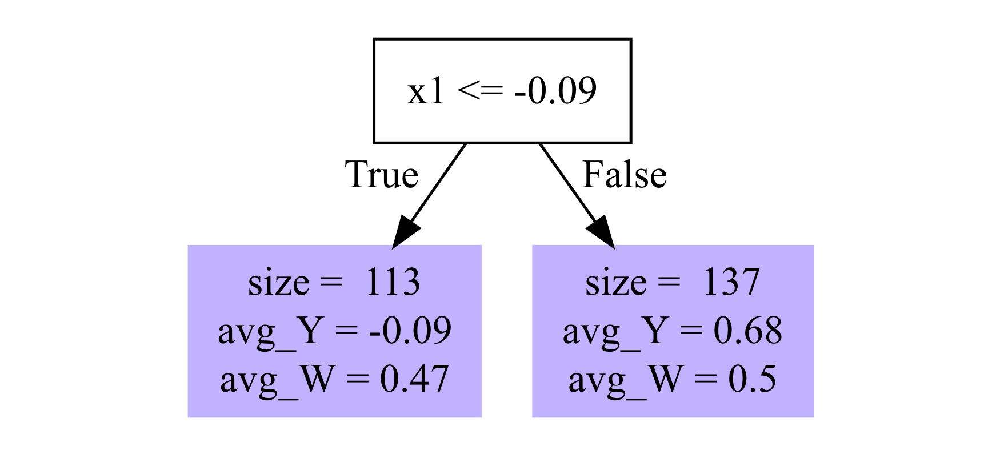
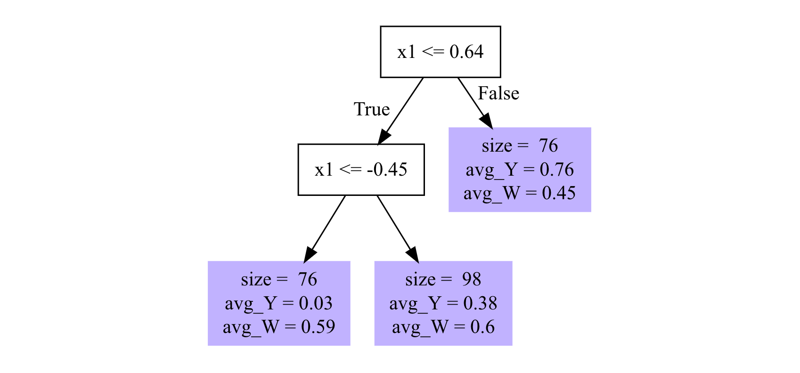
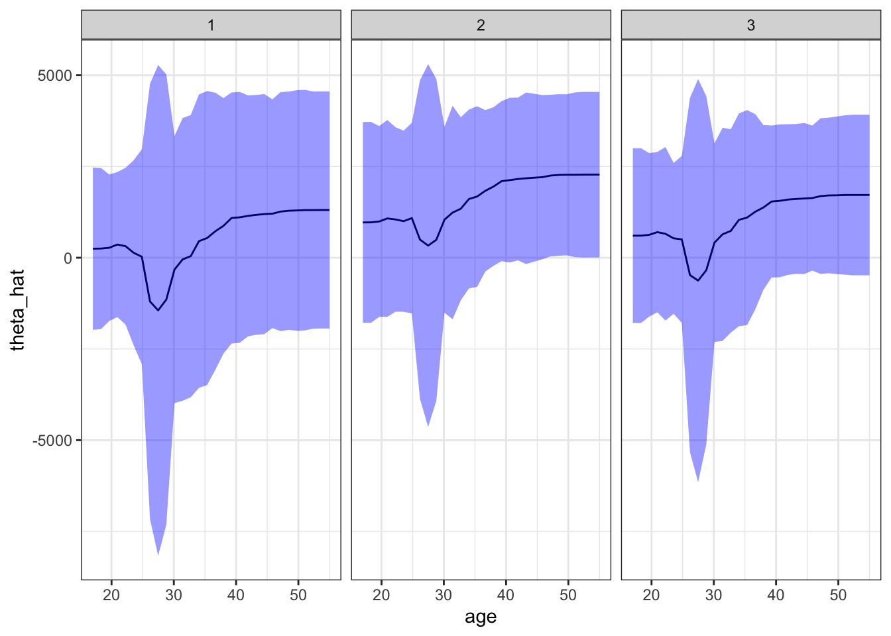
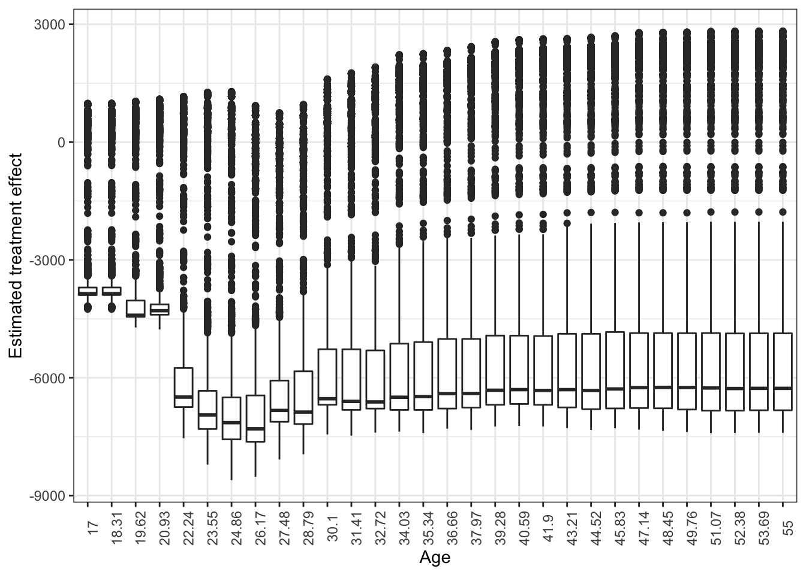

library(data.table)
library(tidyverse)
library(grf)13 Forest-based CATE Estimators
In Chapter 12, we saw a special case of R-learner/DML where the final model is a linear-in-parameter model. Here, we learn two methods that estimate CATE non-parametrically: causal forest (Athey, Tibshirani, and Wager 2019) and orthogonal forest (Oprescu, Syrgkanis, and Wu 2019).
Left to be added + how variance is estimated + balance + ATE + linear correction with locally weighted linear regression
13.1 Model
The heterogeneous treatment effect model of interest in this chapter is the same as the one in Chapter 12.
\[ \begin{aligned} Y & = \theta(X)\cdot T + g(X, W) + \varepsilon \\ T & = f(X, W) + \eta \end{aligned} \tag{13.1}\]
- \(Y\): dependent variable
- \(T\): treatment variable (can be either binary dummy or continuous)
- \(X\): collection of variables that affect Y indirectly through the treatment (\(\theta(X)\cdot T\)) and directly (\(g(X, W)\)) independent of the treatment
- \(W\): collection of variables that affect directly (\(g(X, W)\)) independent of the treatment, but not through the treatment
Causal forest and orthogonal random forest is consistent only if the following conditions fold.
- \(E[\varepsilon|X, W] = 0\)
- \(E[\eta|X, W] = 0\)
- \(E[\eta\cdot\varepsilon|X, W] = 0\)
13.2 Causal Forest
Causal Forest (CF) (as implemented by the R grf package or python econml package) is a special type of R-learner (also a DML) and also a special case of generalized random forest (GRF).
See Chapter 15 for a brief description of what GRF is.
Causal Forest can be useful in estimating heterogeneous treatment effects when they are complex and/or non-linear functions of attributes (heterogeneity drivers) and it is hard to represent them using linear-in-parameter models.
13.2.1 Understanding the basic mechanics with illustrations
Packages to load for replication
Let \(\hat{f}(X_i,W_i)\) and \(\hat{g}(X_i,W_i)\) denote the estimation of \(E[Y|X,W]\) and \(E[T|X,W]\), respectively. Further, let \(\hat{\tilde{Y_i}}\) and \(\hat{\tilde{T_i}}\) denote \(Y_i - \hat{f}(X_i,W_i)\) and \(T_i - \hat{g}(X_i,W_i)\), respectively.
CF can be implemented using the R grf package or python econml package. Both of them implements CF as an R-learner. However, the original causal forest proposed in Wager and Athey (2018) does not follow an R-learner procedure.
Then, CF estimates \(\theta(X)\) at \(X = X_0\) by solving the following equation:
\[ \begin{aligned} \hat{\theta}(X_0) = argmin_{\theta}\;\;\sum_{i=1}^N \alpha_i(X_i, X_0)[\hat{\tilde{Y_i}} - \theta\cdot \hat{\tilde{T_i}}]^2 \end{aligned} \tag{13.2}\]
where \(\alpha_i(X_i, X_0)\) is the weight given to each \(i\). The F.O.C is
\[ \begin{aligned} 2 \cdot \sum_{i=1}^N \alpha_i(X_i, X_0)[\hat{\tilde{Y_i}} - \theta\cdot \hat{\tilde{T_i}}]\hat{\tilde{T_i}} = 0 \end{aligned} \]
\[ \begin{aligned} \hat{\theta}(X_0) = \frac{\sum_{i=1}^N\alpha_i(X_i, X_0)\cdot\hat{\tilde{Y}}_i\cdot \hat{\tilde{T}}_i}{\sum_{i=1}^N\alpha_i(X_i, X_0)\cdot\hat{\tilde{T}}_i\cdot \hat{\tilde{T}}_i} \end{aligned} \tag{13.3}\]
Unlike the DML approaches we saw in Chapter 12 that uses a linear model as the final model, CF does not assume any functional form for how \(X\) affects \(\theta\) as you can see from the above minimization problem. As mentioned earlier, CF is a special case of GRF (discussed in Chapter 15), so CF is also a local non-parametric regression (see Section 1.3.1 for a brief discussion on local regression).
\(\alpha_i(X_i, X_0)\) is determined based on the trees trained based on the pseudo outcomes that are defined specifically for causal forest estimation. Suppose \(T\) trees have been built and let \(\eta_{i,t}(X_i, X_0)\) be 1 if observation \(i\) belongs to the same leaf as \(X_0\) in tree \(t\). Then,
\[ \begin{aligned} \alpha_i(X_i, X_0) = \frac{1}{T}\sum_{t=1}^T\frac{\eta_{i,t}(X_i, X_0)}{\sum_{i=1}^N\eta_{i,t}(X_i, X_0)} \end{aligned} \tag{13.4}\]
So, the weight given to observation \(i\) is higher if observation \(i\) belongs to the same leaf as the evaluation point \(X_0\) in more trees.
It is useful to see a simple example to understand this procedure. Let’s use a simple toy data generating process for this.
\[ \begin{aligned} y = (x_1 + \frac{1}{x_2}) \cdot T + e \end{aligned} \]
where all the variables on the right hand side are independent of one another.
set.seed(293)
N <- 1000
(
data <-
data.table(
x1 = rnorm(N),
x2 = runif(N) + 1,
e = rnorm(N), # error term
T = runif(N) > 0.5 # treatment that is independent
) %>%
.[, y := (x1 + 1/x2)*T + e]
)Now, we train a causal forest model on data.
cf_trained <-
causal_forest(
X = data[, .(x1, x2)],
Y = data[, y],
W = data[, T],
min.node.size = 30
)After training a causal forest model, we have trees like the ones shown in Figure 13.1, which shows only the first and last of the \(2000\) trees are. Trees are made intentionally shallow to make discussions simpler.


You probably noticed that the total number of samples in the leaves is only \(250\) instead of \(1000\), which is the total number of observations in data. When causal forest was trained on this dataset, only half of the entire sample are randomly selected for building each tree (due to the default setting of sample.fraction = 0.5). The halved sample is further split into two groups, each containing \(250\) observations (due to the default setting of honest.fraction = 0.5). Let’s call them \(J_1\) and \(J_2\). Then, \(J_1\) is used to train a tree to find the splitting rules. For example, \(x1 \leq -0.09\) is the splitting rule for Tree 1. Once the splitting rules are determined (tree building process is complete), then \(J_1\) is “vacated” (or thrown out) from the tree. Then, \(J_2\) “repopulate” the tree nodes. That is, the statistics presented in the left and right nodes (avg_Y and avg_W) are based on the samples in \(J_2\), not \(J_1\) which was used to determine the splitting rules. This process is called honest sampling and trees built based on honest sampling are called honest trees (see Section 15.4 for more details).
Let’s take a look at a tree to see what happened. We can use get_tree() to access individual trees from cf_trained.
#=== get the first tree ===#
a_tree <- get_tree(cf_trained, 1)drawn_samples attribute of the tree contains row indices that are selected randomly for this tree.
head(a_tree$drawn_samples)[1] 770 45 727 83 938 870length(a_tree$drawn_samples)[1] 500As you can see, there are 500 samples. The rest of the observations were not used for this tree. Accessing nodes attribute will give you the splitting rules for the tree built and which samples are in what node.
(
nodes <- a_tree$nodes
)[[1]]
[[1]]$is_leaf
[1] FALSE
[[1]]$split_variable
[1] 1
[[1]]$split_value
[1] -0.08902169
[[1]]$send_missing_left
[1] TRUE
[[1]]$left_child
[1] 2
[[1]]$right_child
[1] 3
[[2]]
[[2]]$is_leaf
[1] TRUE
[[2]]$samples
[1] 746 981 127 100 683 857 217 579 110 442 634 756 486 721 285 738 23 612
[19] 65 237 848 715 26 688 312 858 507 901 601 498 249 83 979 570 679 324
[37] 748 836 652 8 349 969 871 737 360 78 289 524 225 117 141 755 457 282
[55] 52 447 287 903 989 105 441 814 449 698 335 706 446 221 735 548 134 841
[73] 543 342 872 919 146 388 512 645 894 864 275 545 302 355 544 36 202 174
[91] 211 468 909 833 133 920 2 521 171 184 597 657 262 125 710 546 938 986
[109] 807 505 119 523 113
[[2]]$leaf_stats
avg_Y avg_W
-0.09 0.47
[[3]]
[[3]]$is_leaf
[1] TRUE
[[3]]$samples
[1] 582 567 788 11 906 296 696 5 564 944 152 256 258 680 914
[16] 834 777 109 563 89 242 808 121 591 729 473 810 771 426 684
[31] 915 402 900 623 638 209 557 851 632 220 849 978 625 861 327
[46] 6 530 890 207 60 540 713 337 445 1000 172 382 454 116 318
[61] 181 183 153 947 22 673 767 180 491 77 952 1 967 717 303
[76] 583 822 252 29 295 32 485 714 968 500 760 889 301 644 367
[91] 987 847 562 452 664 259 238 427 96 980 806 492 837 253 399
[106] 272 353 643 503 390 145 206 368 150 299 186 421 799 101 800
[121] 255 178 358 194 902 155 472 300 404 440 9 484 956 929 585
[136] 742 733
[[3]]$leaf_stats
avg_Y avg_W
0.68 0.50 nodes is a list of three elements (one root node and two terminal nodes). The samples attribute gives you row indices of the samples that belong to the terminal node.
nodes[[2]]$samples [1] 746 981 127 100 683 857 217 579 110 442 634 756 486 721 285 738 23 612
[19] 65 237 848 715 26 688 312 858 507 901 601 498 249 83 979 570 679 324
[37] 748 836 652 8 349 969 871 737 360 78 289 524 225 117 141 755 457 282
[55] 52 447 287 903 989 105 441 814 449 698 335 706 446 221 735 548 134 841
[73] 543 342 872 919 146 388 512 645 894 864 275 545 302 355 544 36 202 174
[91] 211 468 909 833 133 920 2 521 171 184 597 657 262 125 710 546 938 986
[109] 807 505 119 523 113nodes[[3]]$samples [1] 582 567 788 11 906 296 696 5 564 944 152 256 258 680 914
[16] 834 777 109 563 89 242 808 121 591 729 473 810 771 426 684
[31] 915 402 900 623 638 209 557 851 632 220 849 978 625 861 327
[46] 6 530 890 207 60 540 713 337 445 1000 172 382 454 116 318
[61] 181 183 153 947 22 673 767 180 491 77 952 1 967 717 303
[76] 583 822 252 29 295 32 485 714 968 500 760 889 301 644 367
[91] 987 847 562 452 664 259 238 427 96 980 806 492 837 253 399
[106] 272 353 643 503 390 145 206 368 150 299 186 421 799 101 800
[121] 255 178 358 194 902 155 472 300 404 440 9 484 956 929 585
[136] 742 733These are from \(J_2\). That is, they were not used in finding the splitting rule of \(x1 \leq -0.09\). They were populating the terminal nodes by simply following the splitting rule. The difference in a_tree$drawn_samples and the combination of nodes[[2]]$samples and nodes[[3]]$samples is \(J_1\).
J2_rows <- c(nodes[[2]]$samples, nodes[[3]]$samples)
J1_J2_rows <- a_tree$drawn_samples
(
J1_rows <- J1_J2_rows[J1_J2_rows %in% J2_rows]
) [1] 83 938 871 258 540 645 625 742 255 777 491 632 906 952 738
[16] 733 296 282 388 746 152 822 442 209 889 582 194 220 570 652
[31] 180 1000 929 679 181 979 771 706 914 543 127 956 150 65 8
[46] 186 684 583 289 440 390 524 858 249 426 303 484 441 507 252
[61] 121 721 155 468 211 696 987 353 919 638 447 184 944 841 714
[76] 748 503 890 113 134 512 178 680 125 969 302 585 849 834 100
[91] 206 23 833 174 760 318 301 492 445 96 673 225 153 449 22
[106] 473 807 342 978 915 894 486 446 756 207 11 335 262 861 623
[121] 452 523 6 909 399 505 355 989 145 920 903 472 806 710 814
[136] 256 259 900 643 382 116 26 546 77 579 498 967 664 545 295
[151] 767 133 902 404 183 857 901 242 688 698 799 715 78 683 530
[166] 287 612 117 141 737 986 847 564 562 1 810 713 837 729 312
[181] 146 299 285 421 848 968 52 485 427 2 253 238 105 110 172
[196] 634 60 457 358 101 808 327 755 402 500 272 601 36 275 735
[211] 981 89 544 368 300 109 947 324 548 119 557 454 360 717 349
[226] 202 5 9 563 29 171 32 217 221 836 521 657 597 591 980
[241] 851 864 237 872 800 567 788 337 367 644As you can see, there are 250 samples in \(J_1\).
Suppose you are interested in predicting \(\hat{\theta}\) at \(X_0 = \{x_1 = 0.5, x_2 = 1.5\}\). For a given tree, we give 1 to the observations that belong to the same leaf as \(X_0\). For example, for the first tree, \(X_0\) belongs to the right leaf because \(x1 = 0.5 > -0.09\) for \(X_0\).
X_0 <- data.table(x1 = 0.5, x2 = 1.5)
(
which_tree_is_X0_in <- get_leaf_node(a_tree, X_0)
)[1] 3So, we give \(1/N_t(X_0)\) to all those in the right leaf (the third node in nodes) and 0 to those in the left leaf, where \(N_t(X_0)\) is the number of observations that belong to the same leaf as \(X_0\).
#=== which row numbers in the same leaf as X_0? ===#
rows_1 <- nodes[[which_tree_is_X0_in]]$samples
#=== define eta for tree 1 ===#
data[, eta_t1 := 0] # first set eta to 0 for all
data[rows_1, eta_t1 := 1 / length(rows_1)] # replace eta with 1 if in the right node
#=== see the data ===#
data x1 x2 e T y eta_t1
1: 0.89745082 1.990011 -0.35910418 TRUE 1.04085649 0.00729927
2: -1.60850657 1.256397 1.05061185 FALSE 1.05061185 0.00000000
3: 0.73689498 1.708665 -0.89720054 TRUE 0.42494676 0.00000000
4: -0.59891982 1.885940 -0.24822258 FALSE -0.24822258 0.00000000
5: 1.59500071 1.972150 -0.32838233 FALSE -0.32838233 0.00729927
---
996: -0.23916443 1.314333 2.86282188 TRUE 3.38449949 0.00000000
997: -0.08247831 1.458381 -0.82859708 FALSE -0.82859708 0.00000000
998: 0.50428391 1.638361 0.70834971 TRUE 1.82299985 0.00000000
999: -1.08175643 1.226198 0.33946401 FALSE 0.33946401 0.00000000
1000: 0.12954221 1.344623 -0.03024091 FALSE -0.03024091 0.00729927We repeat this for all the trees and use Equation 13.4 to calculate the weights for the individual observations. The following function gets \(eta_{i,t}(X_i, X_0)\) for a given tree for all the observations.
get_eta <- function(t, X_0) {
w_tree <- get_tree(cf_trained, t)
which_tree_is_X0_in <- get_leaf_node(w_tree, X_0)
rows <- w_tree$nodes[[which_tree_is_X0_in]]$samples
eta_data <-
data.table(
row_id = seq_len(nrow(data)),
eta = rep(0, nrow(data))
) %>%
.[rows, eta := 1 / length(rows)]
return(eta_data)
}We apply get_eta() for each of the 2000 trees.
(
eta_all <-
lapply(
1:2000,
function(x) get_eta(x, X_0)
) %>%
rbindlist(idcol = "t")
) t row_id eta
1: 1 1 0.00729927
2: 1 2 0.00000000
3: 1 3 0.00000000
4: 1 4 0.00000000
5: 1 5 0.00729927
---
1999996: 2000 996 0.00000000
1999997: 2000 997 0.00000000
1999998: 2000 998 0.00000000
1999999: 2000 999 0.00000000
2000000: 2000 1000 0.00000000Calculate the mean of \(\eta_{i,t}\) by row_id (observation).
(
weights <-
eta_all %>%
.[, .(weight = mean(eta)), by = row_id]
) row_id weight
1: 1 1.558064e-03
2: 2 5.127165e-05
3: 3 1.674709e-03
4: 4 8.951246e-05
5: 5 1.490776e-03
---
996: 996 7.199398e-04
997: 997 1.312735e-03
998: 998 2.454565e-03
999: 999 3.073570e-05
1000: 1000 1.443599e-03Here is the observations that was given the highest and lowest weights.
data_with_wights <- cbind(data, weights)
#=== highest (1st) and lowest (2nd) ===#
data_with_wights[weight %in% c(max(weight), min(weight)), ] x1 x2 e T y eta_t1 row_id weight
1: 0.4810197 1.471770 1.038158 TRUE 2.19863138 0 422 2.673985e-03
2: -1.1359605 1.869219 0.630474 TRUE 0.02949626 0 634 1.661746e-05Then, we can use Equation 13.3 to calculate \(\hat{\theta}(X_0)\).
(
theta_X0 <- sum(data_with_wights[, weight * (T-cf_trained$W.hat) * (y-cf_trained$Y.hat)]) / sum(data_with_wights[, weight * (T-cf_trained$W.hat)^2])
)[1] 1.25873113.2.2 Training a causal forest
We can use the causal_forest() function from the grf package to train a CF model in R. In Python, you can use CausalForestDML() from the econml package or GRFForestRegressor from the skgrf package.
As of now, there are some notable differences between grf and econml.
#=== load the Treatment dataset ===#
data("Treatment", package = "Ecdat")
#=== convert to a data.table ===#
(
data <-
data.table(Treatment) %>%
#=== create an id variable ===#
.[, id := 1:.N]
)Here are the variables in this dataset that we use.
re78(\(Y\)): real annual earnings in 1978 (after the treatment)treat(\(T\)):TRUEif a person had gone through a training,FALSEotherwise.
\(X\) includes
re74: real annual earnings in 1978 (after the treatment)age: ageeduc: education in yearsethn: one of “other”, “black”, “hispanic”married: married or not
grf::causal_forest() takes only numeric values for \(X\). So, we will one-hot encode ethn, which is a factor variable at the moment.
(
data_trt <- mltools::one_hot(data)
) treat age educ ethn_other ethn_black ethn_hispanic married re74
1: TRUE 37 11 0 1 0 TRUE 0.0
2: TRUE 30 12 0 1 0 FALSE 0.0
3: TRUE 27 11 0 1 0 FALSE 0.0
4: TRUE 33 8 0 1 0 FALSE 0.0
5: TRUE 22 9 0 1 0 FALSE 0.0
---
2671: FALSE 47 8 1 0 0 TRUE 44667.4
2672: FALSE 32 8 1 0 0 TRUE 47022.4
2673: FALSE 47 10 1 0 0 TRUE 48198.0
2674: FALSE 54 0 0 0 1 TRUE 49228.5
2675: FALSE 40 8 1 0 0 TRUE 50940.9
re75 re78 u74 u75 id
1: 0.0 9930.05 TRUE TRUE 1
2: 0.0 24909.50 TRUE TRUE 2
3: 0.0 7506.15 TRUE TRUE 3
4: 0.0 289.79 TRUE TRUE 4
5: 0.0 4056.49 TRUE TRUE 5
---
2671: 33837.1 38568.70 FALSE FALSE 2671
2672: 67137.1 59109.10 FALSE FALSE 2672
2673: 47968.1 55710.30 FALSE FALSE 2673
2674: 44221.0 20540.40 FALSE FALSE 2674
2675: 55500.0 53198.20 FALSE FALSE 2675We now have ethn_black, ethn_hispanic, and ethn_other from ethn. The model we are estimating is as follows:
\[ \begin{aligned} re78 & = \theta(age, re74, educ, ethn\_hipanic, ethn\_black, married)\cdot treat + g(age, re74, educ, ethn\_hipanic, ethn\_black, married) + \varepsilon \\ treat & = f(age, re74, educ, ethn\_hipanic, ethn\_black, married) + \eta \end{aligned} \]
In running causal_forest(), there are many hyper-parameters and options that we need to be aware of.
Since CF is a GRF and GRF uses random forest (with appropriate pseudo outcome), it is natural that some of the CF hyper-parameters are the same as the ones for RF (by ranger()).
num.trees: number of treesmtry: number of variables tried in each split (default is \(\sqrt{K}\))min.node.size: minimum number of observations in each leaf (default is 5)
A hyper-parameter that certainly affects tree building process is sample.fraction, which we saw earlier.
sample.fraction: fraction of the data used to build each tree (default is 0.5)
A higher value of sample.fraction means that the trees are more correlated as they share more of the same observations.
There are three honesty-related options.
honesty:TRUEif using honest-sampling, 0 otherwise (default isTRUE)honesty.fraction: fraction of the data (aftersample.fractionis applied) that is grouped into \(J_1\), which is used to determine splitting ruleshonesty.prune.leaves:TRUEif the leaves with no samples are pruned (default isTRUE)
As mentioned earlier, an honest tree “repopulates” the tree with samples in \(J_2\) with the splitting rules determined using \(J_2\). Therefore, even if all the leaves are populated at the time of determining the splitting rules using \(J_1\) (each leaf must have at least as many observations as min.node.size), when \(J_1\) vacates the tree and \(J_2\) repopulate the tree, it is possible that some leaves do not have any observations. When that happens, the leaf is pruned (removed) if honesty.prune.leaves is set to TRUE.
Let’s now train CF using data_trt.
cf_trained <-
grf::causal_forest(
X = data_trt[, .(age, re74, educ, ethn_hispanic, ethn_black, married)] %>% as.matrix(),
Y = data_trt[, re78],
W = data_trt[, treat]
)Here is what cf_trained has as its attributes.
names(cf_trained) [1] "_ci_group_size" "_num_variables"
[3] "_num_trees" "_root_nodes"
[5] "_child_nodes" "_leaf_samples"
[7] "_split_vars" "_split_values"
[9] "_drawn_samples" "_send_missing_left"
[11] "_pv_values" "_pv_num_types"
[13] "predictions" "variance.estimates"
[15] "debiased.error" "excess.error"
[17] "seed" "ci.group.size"
[19] "X.orig" "Y.orig"
[21] "W.orig" "Y.hat"
[23] "W.hat" "clusters"
[25] "equalize.cluster.weights" "tunable.params"
[27] "has.missing.values" For example, you can get \(\theta(X_i)\) by accessing the predictions attribute.
cf_trained$predictions %>% head() [,1]
[1,] 727.4426
[2,] 588.9038
[3,] -597.8268
[4,] 1280.5674
[5,] 686.0950
[6,] 1161.640713.2.3 Predict and interpret CATE
Before looking at how to predict \(\theta(X)\), let’s look at which variables are used to split tree nodes. You can get such information using split_frequencies() on a trained causal forest.
split_frequencies(cf_trained) [,1] [,2] [,3] [,4] [,5] [,6]
[1,] 219 1544 97 38 22 78
[2,] 1382 1055 672 31 147 272
[3,] 1814 509 1065 20 222 188
[4,] 1301 275 724 8 86 75In this table, rows represent the depth of the nodes and columns represent covariates. For example, the second variable (educ) was used to do the first split 1544 times and split a node at the second depth 1055 times. A variable with higher numbers of splits at earlier stages is more influential in driving treatment effect heterogeneity. variable_importance() returns a measure of how important each variable is in explaining treatment effect heterogeneity based on the split information.
variable_importance(cf_trained) [,1]
[1,] 0.20540138
[2,] 0.61017707
[3,] 0.10190537
[4,] 0.01544042
[5,] 0.02105530
[6,] 0.04602046So, according to this measure, the second variable (educ) is the most important variable. While variable of importance measure is informative, it does not tell us how the variables are affecting treatment effects. For that, we need to look at \(\theta(X)\) at different values of \(X\).
You can use predict() to predict the treatment effect at \(X\). For example, consider the following evaluation point.
X_0 <-
data.table(
age = 30,
re74 = 40000,
educ = 10,
ethn_hispanic = 0,
ethn_black = 1,
married = TRUE
)Note that the order of columns of the evaluation data must be the same as that of the X in causal_forest() when you trained a CF model. You can set estimate.variance to TRUE to get \(var(\hat{\theta}(X))\) along with the point estimate.
predict(
cf_trained,
newdata = X_0,
estimate.variance = TRUE
) predictions variance.estimates
1 -7285.096 1589426Unlike linear-in-parameter model, there are no coefficients that can immediately tell us how influential each of \(X\) is in driving the treatment effect heterogeneity. One way to see the impact of a variable is to change its value while the value of the rest of \(X\) is fixed. For example, for the given observed value of \(X\) except age, you can vary the value of age to see how age affects the treatment effect. We can do this for all the observations and then can get a good picture of how the treatment effect varies across individuals at different values of age.
Let’s first create a sequence of age values at which \(\hat{\theta}\) is predicted.
age_seq <-
data.table(
age = data_trt[, seq(min(age), max(age), length = 30)]
)We then create a dataset where every single individual (observation) in the original data data_trt to have all the age values in age_seq while the value of the rest of \(X\) fixed at their own values.
Confirm what reshape::expand.grid.df does with this simple example.
reshape::expand.grid.df(
data.table(a = c(1, 2, 3)), # first data set
data.table(b = c(1, 2), c = c("a", "b")) # second data set
) a b c
1 1 1 a
2 2 1 a
3 3 1 a
4 1 2 b
5 2 2 b
6 3 2 bdata_te <-
reshape::expand.grid.df(
age_seq,
data_trt[, .(re74, educ, ethn_hispanic, ethn_black, married, id)]
) %>%
data.table()Let’s now predict \(\hat{\theta}\) with their standard error estimates.
(
theta_hat_with_se <-
predict(cf_trained, newdata = dplyr::select(data_te, -id), estimate.variance = TRUE) %>%
data.table() %>%
.[, se := sqrt(variance.estimates)] %>%
setnames("predictions", "theta_hat") %>%
.[, .(theta_hat, se)]
) theta_hat se
1: 246.7308 1134.186
2: 251.5291 1125.746
3: 271.6803 1024.368
4: 361.2663 1013.566
5: 316.5520 1095.276
---
80246: -5887.2414 1745.328
80247: -5895.0378 1750.329
80248: -5893.1043 1773.677
80249: -5885.4768 1760.558
80250: -5885.4768 1760.558Figure 13.2 shows the impact of age on treatment effect for the first three individuals of data_trt. For example, if an individual that has the identical values for \(X\) except age and also this person is 40 years old, then the treatment effect of the training program would be about $1,000. Standard errors are fairly large and treatment effects are not statistically significantly different from 0 at any value of age for all three individuals. The impact of age seems to be very similar for all the individuals. However, you can see shifts in \(\hat{\theta}\) among them. Those shifts are due to the differences in other covariates.
plot_data <- cbind(data_te, theta_hat_with_se)
ggplot(plot_data[id %in% 1:3, ]) +
geom_line(aes(y = theta_hat, x = age)) +
geom_ribbon(
aes(
ymin = theta_hat - 1.96 * se,
ymax = theta_hat + 1.96 * se,
x = age
),
fill = "blue",
alpha = 0.4
) +
facet_grid(. ~ id) +
theme_bw()
Figure 13.3 shows the box-plot of treatment effects for all the individuals. Note that variations observed at each age value is due to heterogeneity in treatment effect driven by covariates other than age. It looks like the three individuals looked at are exceptions. For the majority of individuals, the estimated treatment effects are negative at any value of age.
ggplot(plot_data) +
geom_boxplot(aes(y = theta_hat, x = factor(round(age, digits = 2)))) +
theme_bw() +
xlab("Age") +
ylab("Estimated treatment effect") +
theme_bw() +
theme(
axis.text.x = element_text(angle = 90)
)
You can easily repeat this analysis for other covariates to see their impacts as well.
13.3 Orthogonal Random Forest
References
Athey, Susan, Julie Tibshirani, and Stefan Wager. 2019. “Generalized Random Forests.” The Annals of Statistics 47 (2): 1148–78.
Oprescu, Miruna, Vasilis Syrgkanis, and Zhiwei Steven Wu. 2019. “Orthogonal Random Forest for Causal Inference.” In International Conference on Machine Learning, 4932–41. PMLR.
Wager, Stefan, and Susan Athey. 2018. “Estimation and Inference of Heterogeneous Treatment Effects Using Random Forests.” Journal of the American Statistical Association 113 (523): 1228–42. https://doi.org/10.1080/01621459.2017.1319839.